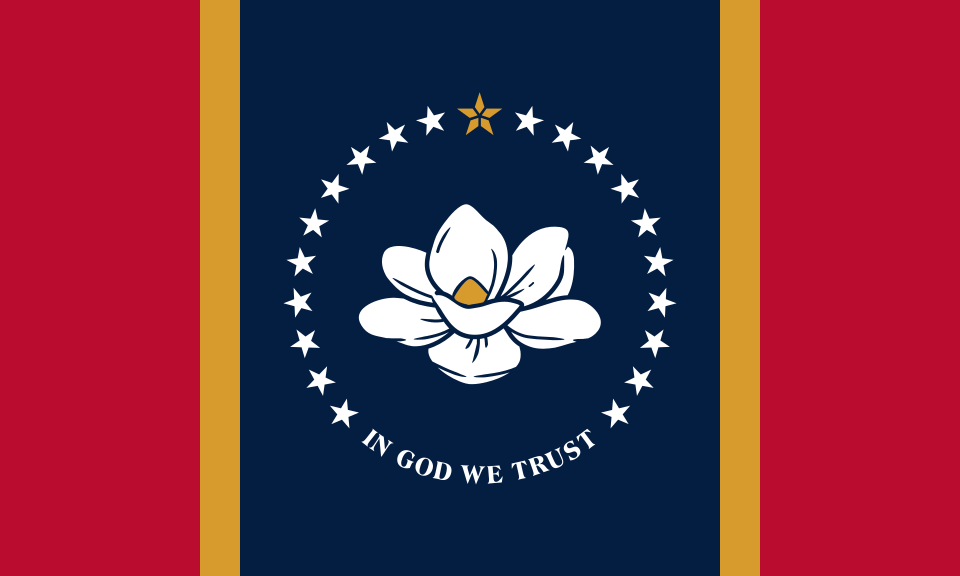

Chris Riordan
About Me
My name is Chris Riordan, Currently living Mississippi Gulf coast, working full time and getting a degree from BYU Pathway. The temple list below is special, it's the order of which temples I have been to. Boston before I was a member but during it's open house. Atlanta where I got my endowments, and Memphis where I was sealed to my wife.
Mississippi, USA

The Magnolia State, Birthplace of Elvis, and Oprah.